sharanx
sharanxCloudnine Hospitals

Service Design
THE CHALLENGE
When patients go to hospitals, much of their satisfaction depends upon the people they interact with, the time they spend there and the ease of the experience. Healthcare in India has not been as highly invested in as it is in other countries but it is starting to see some investment in technology. Especially in a densely populated country like India where the daily traffic in hospitals is high, a hassle-free hospital experience can only be delivered through the use of technology.
THE OUTCOME
- 3 hour wait-time reduced to 1 hour
- 8 touch points reduced to 3
- An app suite that brought everyone at the hospitals brought onto one platform
- Reduced number of steps in registration
- Addition of doctor app that talks with the customer app
THE APPROACH
FIELD RESEARCH
Our goal was to understand and map the user journey through the hospital. From the moment a patient arrives at the hospital until the moment they leave, we wanted to see what was happening on the hospital floor.
We focussed on three points:
- What are the various touch points in the hospital?
- Who is the patient speaking to, other than her consultant?
- How long do patients wait for their consultation on an average?
We mapped the touch points using an architect’s map of the hospital floor supplied by Cloudnine. Here’s what we found.
- Patients usually go through 8 touch points between arriving at the hospital and actually seeing their consultant. A majority of that time is spent feeling nervous or irritated.
- On an average, patients speak with up to 7 people, including a customer relations executive, a receptionist, the consultant’s personal assistant, nurses, a senior consultant, pharmacists and lab technicians.
- The total time it takes from the moment they walk into the hospital to the moment they enter their consultant’s office can be up to 5 hours.
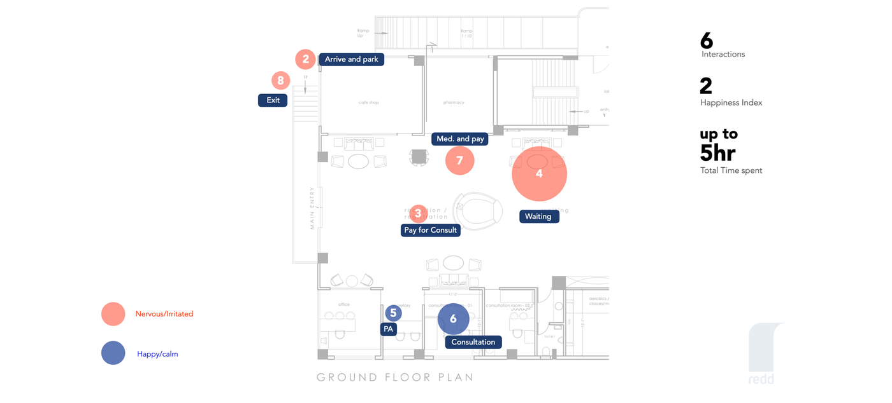 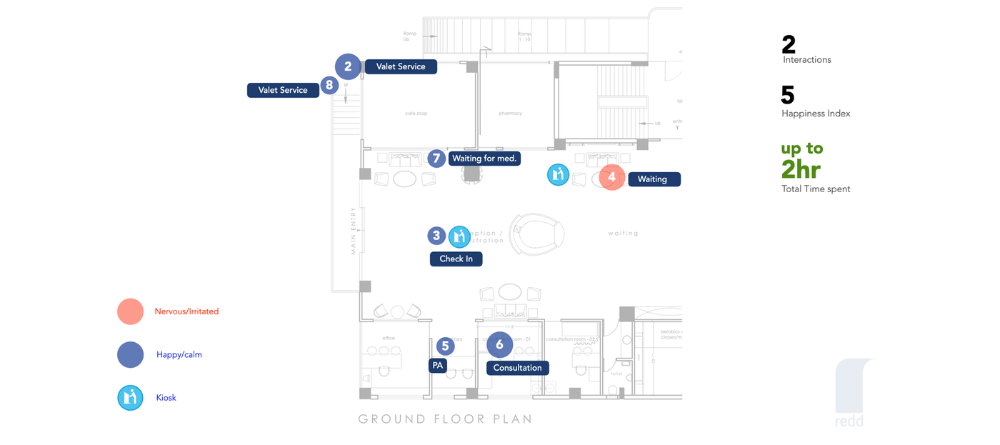
EMPATHY MAPPING
We then mapped the emotional experience of the patients based on the touch points we identified.
Asking maternity patients to go back and forth from a customer relations executive in the waiting area, to an admin at a hospital reception, to the consultant’s personal assistant outside the doctor’s office causes unnecessary stress. But this mapping also enabled us to understand which elements were stressors during the visit, which ones were important and which could be avoided.
USER INTERVIEWS
1. PATIENT INTERVIEWS
We interviewed 15 patients about their experience at the hospital. This is what they had to say about the areas of improvements:
- 8 people said that the wait time for appointments was 2-3 hours on an average.
- 6 people said that they came to the hospital because they were referred to a great doctor, but that their experience with the rest of the hospital staff could be better.
- 5 people said that they were not told that their doctor would be delayed due to an emergency prior to arriving at the hospital.
- 4 first-time fathers wished that they had a community where they could connect with other fathers in the same situation as them.
- 1 person said that they had to drive 45 minutes to a different branch of the hospital to avail services for the package they had bought there even though it was from the same hospital franchise.
2. DOCTOR INTERVIEWS
We also interviewed 4 doctors about their experience working in the hospital. This is what we collected:
- 4 of them said that they relied on their assistants to compile all the hospital records of a patient prior to their consultation.
- 3 of them said that patients had almost as many follow-up questions after the consultation as they had during it.
- 3 of them shared their personal phone number with patients as a means of contacting them but patients often times took advantage of it and didn’t respect the doctor’s privacy.
- 3 of them said that patients were asked to come back to the hospital just to pick up a report when it was ready.
3. STAFF INTERVIEWS
We interviewed several hospital staff and learnt that:
- Their knowledge about procedures and processes varied quite a bit, quite possibly influenced by the staff changing quite often.
- There were a few redundant procedures where some of the CRM staff got in between the doctor and the patient and became a cause for irritation for the patient.
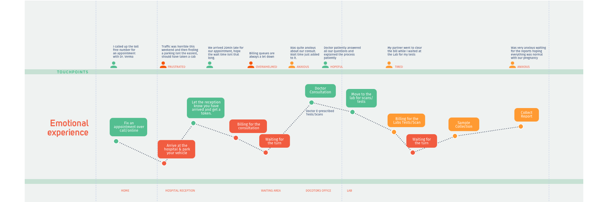
KEY LEARNINGS
FROM FIELD RESEARCH
- The most frequent points of concern for patients were around the wait-times and the unpredictability of the doctor’s appointments. This was a key problem that needed to be solved.
- Choosing a doctor to be in charge of your baby’s birth is a more involved process than just viewing the key stats of the doctor. A better doctor-patient matchmaking system needed to be devised.
- A lot of the questions being asked by the patients were repetitive for the doctors and while there were other sources of information available to users, they had to hear it from their doctor.
- The hospital needed to standardise the operations across the various centres and provide patients a seamless experience no matter which centre they visited. This was going to be a bigger problem to solve.
- The patient’s understanding of the services offered by the hospital was not clear. This wasn’t helped by the staff’s understanding of the situation either.
FROM MARKET RESEARCH
Before trying our hand at our own solutions for the above problems, our first step was to download and use top health and medical apps in the market to see how they tackled the issues we identified as key user needs. Some useful and relevant features we found in our research were:
- Chat with your doctor
- View medical records
- Order medication
- Find a doctor
- Book appointments
- Curated content for users on how to be healthier
Most apps offered segmented parts of the hospital experience, creating a disjointed experience. There wasn’t one that addressed the patient’s experience throughout her pregnancy.
DESIGN PRINCIPLES
In order to design the application, we created this new architect’s map to outline the ideal hospital experience we would be able to design. A majority of the time, the patient is likely to be happy and calm because the physical touch points would be taken care of using our app, including valet, check-in, being updated of their status in the queue, their doctor’s status and ordering medication. We offered ways for non-smartphone users to interact with the hospital as well but made a design choice of removing such touch points and reduced the wait-time from up to 5 hours to just 2 hours.
The following five guidelines formed the foundation of our approach, which would eventually become the basis of the solution we designed:
1. BE SENSITIVE
- Women are giving birth later in life now than in previous generations.
- They are opting to do so rather than approaching it as an automatic expectation from their lives, making this already special event even more important.
- The older the person is, the higher the risks of complications during birth and many are aware of this fact, making them more anxious through the entire process.
- Being sensitive to all of the things that they are going through at various stages is important in being able to design and deliver an experience that they would appreciate.
2. BE RELEVANT
- There’s a lot of information that surrounds the birthing process. There’s so much that one needs to know about conceiving, the changes their body will go through, the types of nutrition that are good for a baby growing in the womb, the kind of care one needs, etc.
- Showing all of the information at the same time will not only serve to overwhelm, but will also prove useless. Showing relevant information at the right times is key.
3. BE A LIFELINE TO ALL
- One hopes for there to be no complications during birth, but life can take another course altogether. This weighs heavily on mothers and even more so on first-time mothers when their inexperience leaves them more worried than they should be.
- While there are levels of alarm, the only course of remedy so far is to call a doctor. Some expecting parents call too often, others who are worried about being bothersome may end up calling too late. The app can recognise the different levels of alarm and provide the various remedies.
4. BE SOCIAL
- There are more nuclear families in India now than at any other point in its history before. Couples travel to cities where they find work and no longer have unlimited access to the family structures that would be around to help in the birthing process.
- While the best hospitals take good care of the physical aspects of the birthing process, there’s still an unaddressed need in terms of the emotional.
- This could be done by bringing in the social nature of the application and enabling expecting mothers to meet each other and form their own support groups.
5. BE A PART OF THE CULTURE
- We are a very social culture in India but most apps out there that aid in the process of birthing are designed for more individualistic cultures.
- Families are involved whether in the same city or not. Technology can play a crucial role in this and can not only address their concerns, but also provide ways to be more involved.
- This can play a vital role in making the mother-to-be feel more comforted and cared for.
- It can also help first-time husbands understand the changes their partners are going through so they respond appropriately.
FINAL OUTPUT
We focussed on two main points in our solution, which aimed to decrease the time patients spent in the hospital and to help them stay organised by giving them easy access to all the essential information.
1. REGISTERING WITH A BOT
The goal for us during the registration process was to bring the user into the application in as few steps and as easily as possible. So we focussed on figuring out the set of information that we simply couldn’t do without and allow the patient to come back and fill in any additional details at a later point. To do this, we adopted a conversational structure to make the patient feel comfortable and the app more approachable.
The downside, however, was the amount that the user needs to type. We simplified this by providing ”input helpers” that are essentially guesses based on the most frequently provided answers from patients. This saves a lot of typing and also provides guidance to the patients as to what kind of answer was being requested. We took the bot (named Bump) further into the system, allowing Bump to become another way to interact with the entire app.
For example, when the patient decides she wants to schedule an appointment, Bump comes back to collect the remaining details that are required to complete the registration and book her appointment. Bringing up details in context and only when they are really required also helps justify the level of detail and time it takes to complete the form.
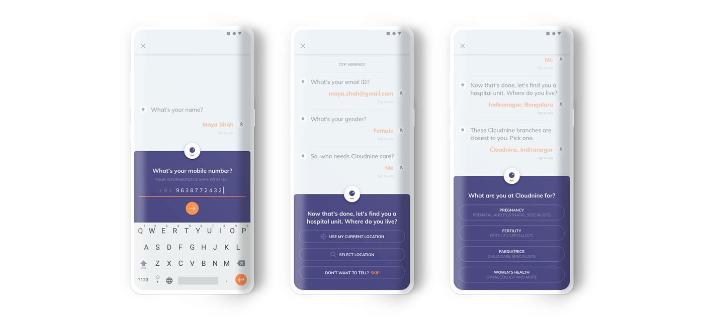
2. USER FLOWS AS A TABLE
There were a lot of use cases during registration that needed to be addressed. Instead of using the traditional flow chart method, which became haphazard and disorganised with too many conditionals and branches, we used a table as shown below. It was successful in checking if we were missing any use case and easy to go through with the client.
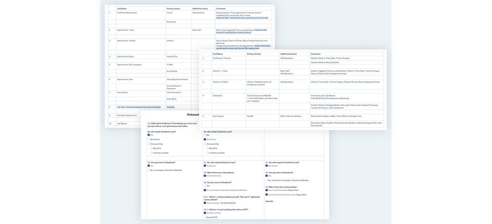
3. APPOINTMENT TIME-SLOTS
Our research showed that patients were currently waiting up to 2-3 hours for their appointments. It was taking 6 minutes to book an appointment via the current system of calling customer service. We streamlined the appointment-booking process on the app to an average of 1-2 minutes and in some cases, even less.
When a patient books an appointment, the system designates an exact time. The problem is, if a patient confirms their appointment and shows up even 10-15 minutes late, all the following patient appointments are affected and pushed back.
In our system, when a patient books an appointment, she gets to choose from half-hour time slots and is added to the waiting queue depending upon her arrival time at the hospital. A half-hour slot guarantees that she expects to be seen within the half-hour period. She is told to check in 15 minutes prior to her appointment and is told her spot in the queue when she gets to the hospital. The time-slot system works on a first-come, first-served basis and thereby, is not influenced by other people’s arrival times.
If another patient books an appointment in Slot B (9:30-10:00 a.m.) and arrives at 9:30 a.m., they are told that they are second in line. They are given the expectation that they are on priority in Slot B because they arrived early, so even if Slot A extends longer than 9:30 a.m., they won’t mind since they are given a guarantee that they will be seen within a half-hour period. If they are given an exact time, their chances of frustration at not being seen at the promised time are high.
Notice that Slot C has one vacancy and Slot D has two. This is to account for members of Slot A and B who don’t arrive within their check-in time. If they show up late, they are told that they have been moved to a different slot with a vacancy and that their wait-time will be up to an hour. Given the total time spent at the hospital currently can be up to 5 hours at times, an hour still isn’t much.
Using the time-slot system, patients who arrive late for their slot will not start a domino effect and cause every consultation after them to be affected, especially the patients who actually checked in on time, and their wait time is still less than 2 hours. By replacing exact appointment times with a time-slot system, we have reduced waiting time considerably to a maximum of 45 minutes.
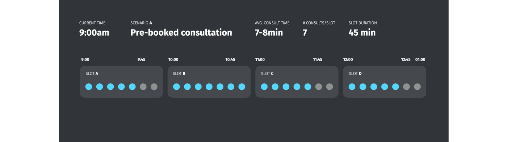
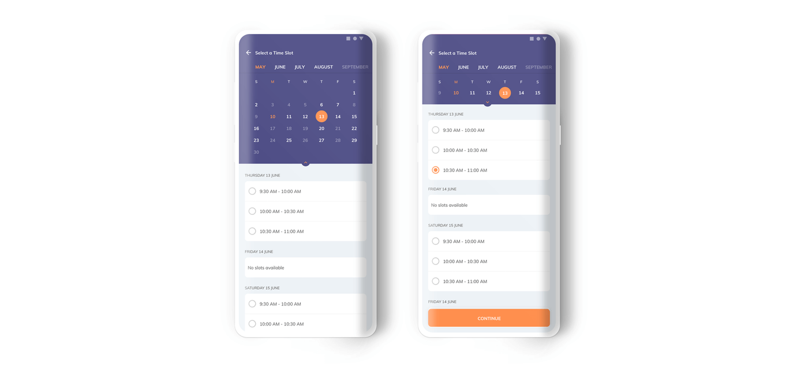
4. CONSULTATION STATUS CARDS
Our research revealed that too many touch points in the hospital increases user dissatisfaction. We focussed on creating an experience where the entire user journey through the hospital can be completed on the app – from check-in, to seeing their spot in the queue, to getting updated on their doctor’s status, to having the ability to cancel or reschedule an appointment, to viewing their next steps post consultation, etc.
To do this, we created different states of the consultation card on the home screen, which constantly updates depending upon where the patient is in her pregnancy and hospital journey, as shown below.
Secondary cards appear below the active consultation card that give suggestions on the next steps the patient can take. If there is an upcoming appointment in an hour, for example, the patient sees suggestions like booking a cab or calling a Cloudnine representative. On the active card, an overflow menu in the top right provides the option to cancel or reschedule an appointment, without leaving the home screen.
We noticed that the list of instructions a doctor gives a patient can be tedious, so the cards appearing after a completed consultation break the steps down into easy to-do cards. Once tasks are completed, the respective card disappears.
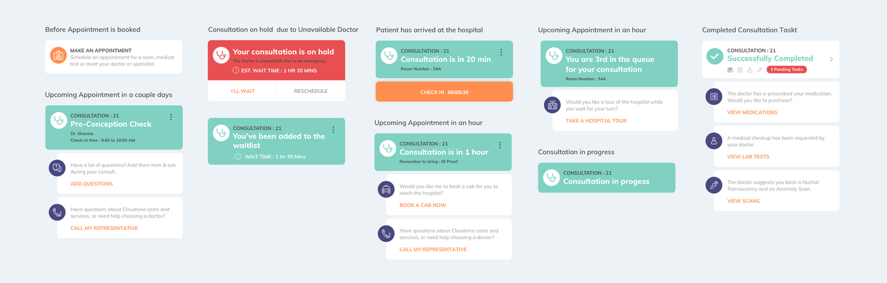 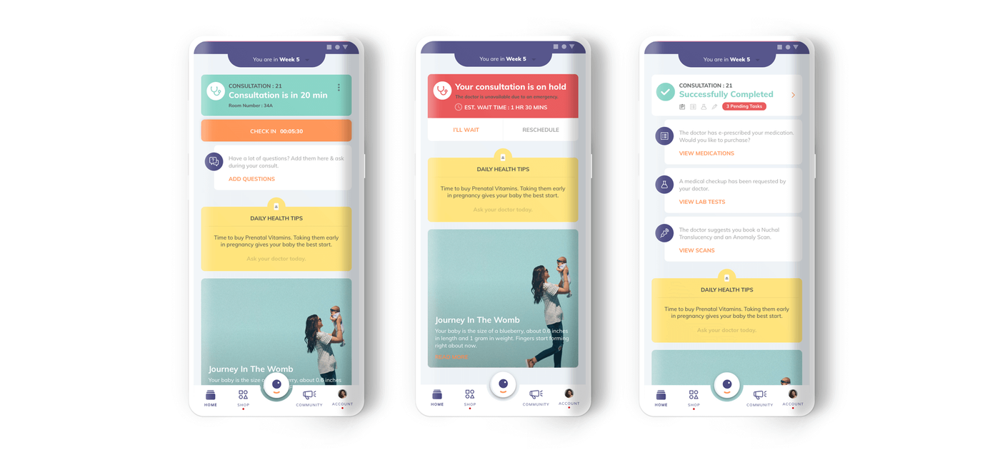
5. TIMELINE
The pregnancy journey is a long one filled with consultations, scans, labs, workshops and other events. We have laid out all the milestones in an easily accessible timeline view. On any given day in the journey, a patient can see her progress, her upcoming milestones and previously completed milestones.
We find showing the user her milestones in a timeline and schedule view transforms the overwhelming journey into an easy step-by-step process. She can book consultations, scans/lab appointments and RSVP for events directly from this view.
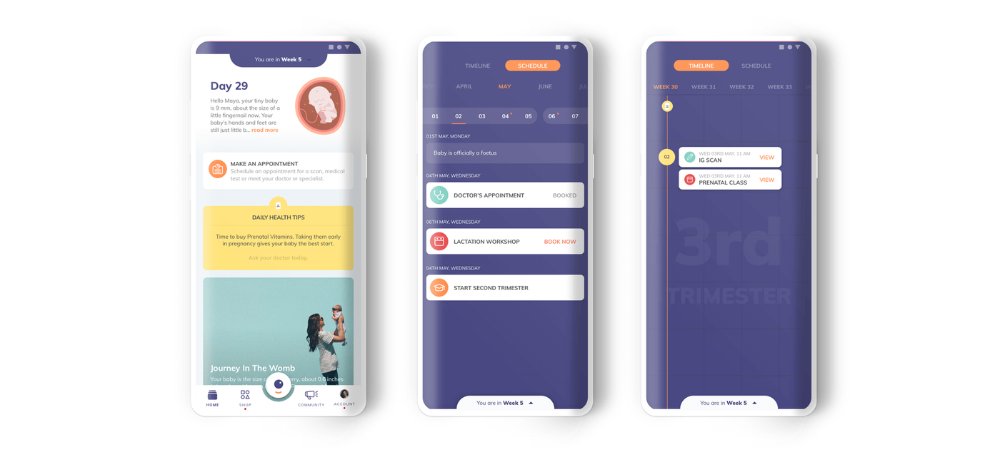
6. MEDICAL RECORDS
In our research, we noticed that two copies of all documents are printed, one for the patients and one for the hospital. This paper trail causes doctors to rely heavily on the organisational skills of their assistants when handling patient documents. On the flip side, patients themselves have to keep their printed documents in a safe place. Having a feature in the app where users can store and view medical records all in one place is imperative.
In the app, an account holder can add a partner to the account for shared usage and a user can handle multiple family accounts within it. A husband can support his wife, her mother can also support her and take care of booking appointments so she need not feel like she has to do it all on her own.
If the patient books a lamaze workshop, the event will be added to both partner calendars. Anyone with partner access to the main account can take responsibility and help the account holder in her long journey.
Documents are organised by consultation and a user can search consultations by doctor name, date, consultation type, scan name, lab name or medication name. When documents/reports are ready for viewing, a patient no longer needs to come to the hospital to collect the document. Instead, she gets the reports right on her phone. If a patient chooses to get a scan outside Cloudnine, she can upload the report right onto the app.
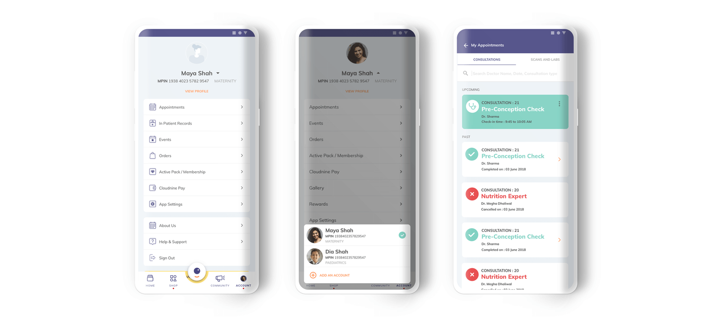
7. CONSULTATION PREPARATION
In our research, we learned that many doctors would tell their patients to put a sticky note on their folder holding medical documents and quickly jot down any questions as they come up between consultations. In the customer app, an “Add Questions” section is accessible from the upcoming consultation card on the home screen.
A user can collect all her questions for the doctor in one place and the doctor gets access to these questions before the consultation on his mobile and desktop app. Even if the user doesn’t have their sticky note on hand, she can still add questions in one place on her phone, organised by consultation.
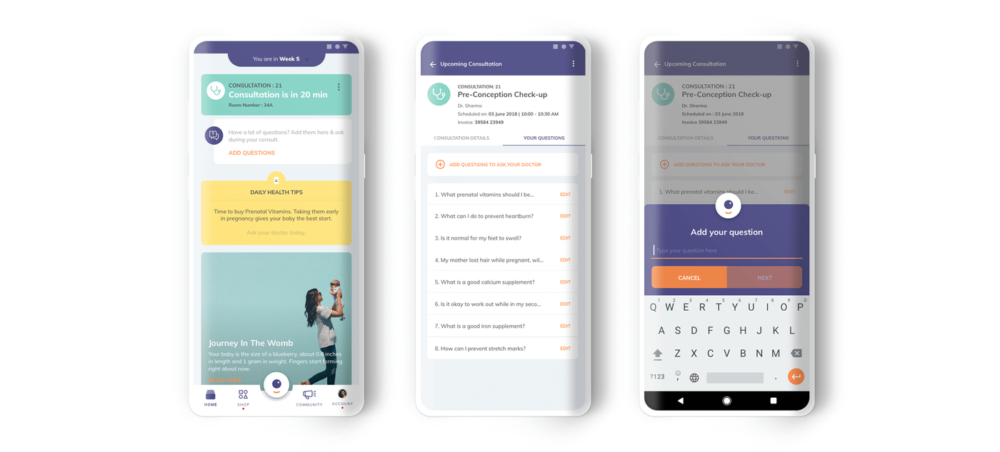
8. CHAT WITH THE DOCTOR
Doctors give patients their personal numbers to contact them but many patients tend to take advantage of the gesture by messaging and calling the doctor at all hours. Without a full background profile of the patient, the doctor sometimes has difficulty diagnosing her and needs to ask for more details. In the customer app, there is an option to chat with the doctor. On the doctor’s app, they can access the patient’s profile and properly diagnose the symptoms and resolve the issue in one go. By having a chat feature in their app, the doctor is able to have peace of mind that their business and personal life can be separate on their phone and that they can respond to any questions their patients may have quickly and effectively.
9. COMMUNITY
A great feature that some pregnancy apps have already implemented is a community. After speaking with patients, we noticed that first-time fathers, in particular, want to be more proactive in the pregnancy process but are, instead, clueless as to how to act and what to do.
The benefits of building a community for first-time parents are endless – they can have peer group support, join their due-date club, talk to more experienced parents, get emotional support for post-mortem depression, the list goes on. Even for more experienced patients, they can find and attend events to speak about their own experiences. The app curates different content for mothers and fathers in the community.
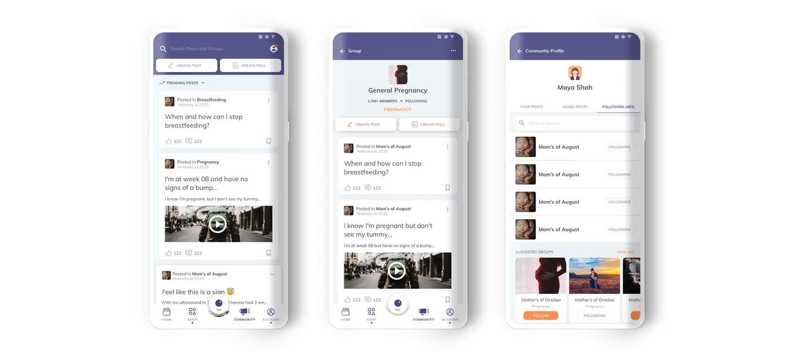
10. ONE-STOP SHOP
Our research showed inconsistencies in the hospital experience from one hospital to another. A patient can avail different services from the same Cloudnine Membership Plan, depending on which branch they purchased the package from; however, a customer must be at the hospital where she buys the plan to avail the services she has signed up for. Users are given brochures while they are at the hospital that inform them about delivery packages that they can avail.
We knew the importance of creating a space in the app where users can understand what coming to Cloudnine entails and what they’ll receive in terms of services, all in one place. By presenting users all of the Cloudnine offerings in a comprehensible format, we anticipate a much higher conversion rate for package purchases.
The shop feature in the app standardises all delivery packages in an easy-to-understand manner. Package details can be shared easily with family members using the “Share” option. A membership plan can be bought directly from the app without any external assistance and the preferred location to avail the services can be changed with ease. Plus, all the products and services a patient needs from the beginning to the end of the journey are compiled in one place. The system will push notifications to a patient nearing the end of her pregnancy, for example, to buy diapers and newborn essentials.
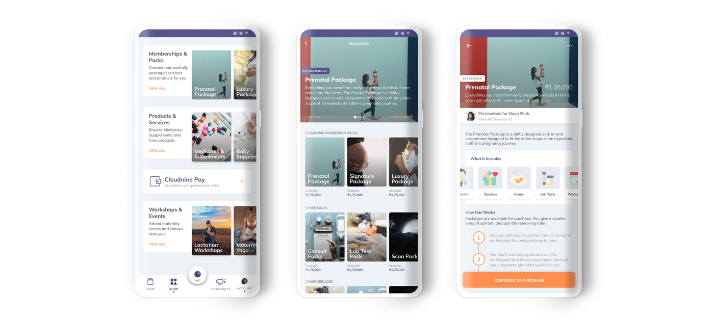